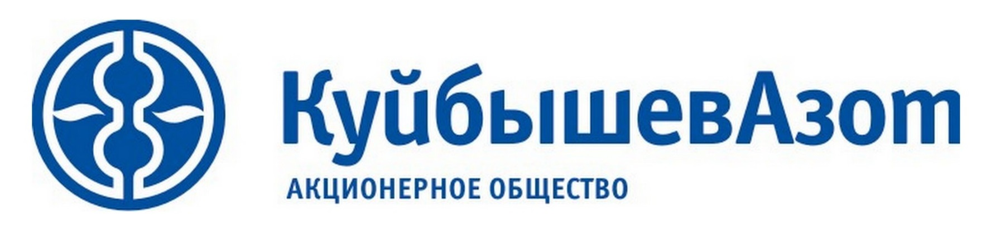
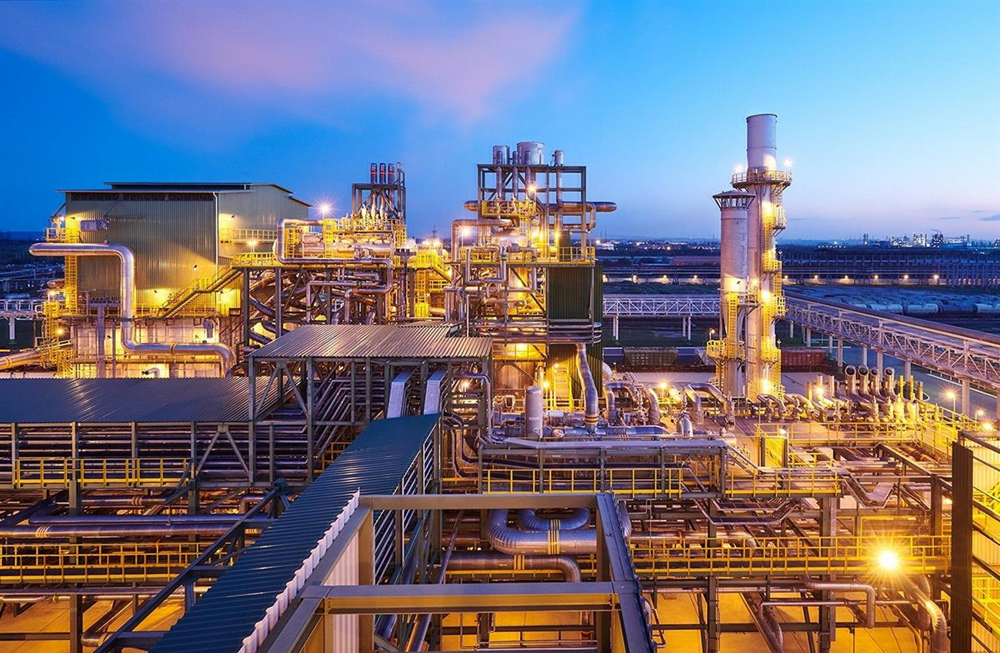

Навигация
Информация о компании
КуйбышевАзот — одна из ведущих химических компаний в России, основанная в 1966 году. лидер в производстве капролактама и продуктов его переработки, входит в число крупнейших производителей азотных удобрений. Активная инвестиционная политика обеспечивает «КуйбышевАзоту» быстрый и эффективный рост и устойчивое развитие. Основатели компании — группа ученых и инженеров.
Краткая история
Строительство Куйбышевского азотнотукового завода началось в 1961 году. В 1966 году предприятие заработало по полной технологической схеме. 23 августа 1966 года считается официальной датой рождения завода. В 1975 году создано производственное объединение «КуйбышевАзот» с головным предприятием КАТЗ, в которое вошли строящиеся Тольяттинский азотный завод, Азотреммаш, Трансаммиак. В 1981 году в результате реструктуризации они были выделены в самостоятельные юридические лица. В 1991 году «КуйбышевАзот» стал арендным предприятием, а затем, в 1992 году, создано акционерное общество «КуйбышевАзот».
Когда происходила смена экономической и политической модели государства, предприятие, в отличие от многих других заводов, сумело удержать выработку товарной продукции на уровне дореформенной и сохранить высококвалифицированный стабильный коллектив.
Начало нового века стало для «КуйбышевАзота» временем бурного роста. В рамках стратегии развития компании с целью увеличения доли продукции с более высокой добавленной стоимостью с 2000 года реализуется проект по углубленной переработке капролактама. Создан комплекс производств полиамида 6, технической нити и кордной ткани на производственной площадке в Тольятти, введено в эксплуатацию производство инженерных пластиков в Китае, приобретены активы по производству технических и текстильных нитей, кордной ткани в г. Курск, полиамидных тканей в г. Балашов. Организованы агрохимические прирельсовые базы, дилерская сеть по реализации минеральных удобрений.
В настоящее время ПАО «КуйбышевАзот» является группой компаний, предприятия и подразделения которой расположены в различных регионах РФ, а также Германии, КНР и Сербии. Созданы совместные предприятия, работающие на промплощадке в Тольятти, с несколькими крупнейшими мировыми компаниями.
Сегодня Куйбышевазот активно инвестирует в новые технологии и устойчивое развитие.
Миссия и цели
Опираясь на накопленный опыт и используя достижения в области химии, создавать продукты, которые расширяют возможности людей и повышают качество их жизни. Быть лидером в производстве капролактама, полиамида и продуктов их переработки. Развивать поставки удобрений на отечественный рынок. Сбалансировано удовлетворять интересы государства, акционеров и работников общества.
ПРИНЦИПЫ
 Порядочность
Порядочность
 Последовательность
Последовательность
 Профессионализм
Профессионализм